Application for radiative energy loss calculations. More...
Functions/Subroutines | |
| program | calculate_g |
| subroutine | inputs |
| Subroutine to read user inputs and transport parameters. More... | |
| subroutine | howfar |
| subroutine | ausgab (iarg) |
| subroutine | source |
| subroutine | test_brems |
| subroutine | test_compton |
Detailed Description
Application for radiative energy loss calculations.
EGSnrc application to calculate 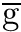, the average fraction of kinetic energy transferred to charged particles by photons lost to radiation when electrons slow down, or the radiative yield Y for electron beams. For photons, quantities such as kerma, collision kerma,  and
and  are also calculated.
are also calculated.
Implemented a type=1 calculation that can run until a prescribed precision is reached at any stage during the calculation. In a type=1 calculation 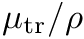 is calculated first, then 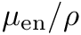 is obtained as 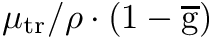, where is the fraction lost to radiation from slowing down electrons. The advantage is that when is small, converges much faster to the desired precision compared to a type=0 calculation.
Revision History
Version 1.0 (I. Kawrakow, January 2000): Initial version.
Version 1.1 (I. Kawrakow, March 2002): Added 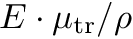 and 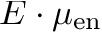.
Version 1.2 (D. Rogers, June 2002): Get and .
Version 1.3 (D. Rogers, Aug 2002): Account for fluorescent photons in and correctly.
Version 1.4 (R. Townson, December 2016): Energy depositions for kerma calculations below the cut-off are now sorted out using AUSGAB to include only Auger from relaxations, not fluorescence.
Version 1.5 (E. Mainegra-Hing, January 2020): The 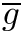 calculation for spectra was missing a factor 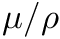 for both calculation types. This factor is now included when scoring 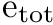 and 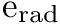. Bug reported by D. Rogers. The output has been made more informative and a verbose option added for type 1 calculation. Code has been extensively documented and a doxygen based user's manual created.
Version 1.6 (E. Mainegra-Hing, August 2020): Calculation type 1 has been made independent of NCASE and the target precision now defaults to 1%. Algorithm now ensures is calculated to the user-requested precision 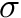 by computing down to / 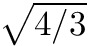 and 1- to /2. For calculations in the megavoltage range (for Ir-192, Co-60) one can modify the target precision of mutr and 1-g to save substantial time in the fairly time consuming calculations above 1 MeV. To this end the uncertainty in and 1- can be modified so that the value has an precision according to:
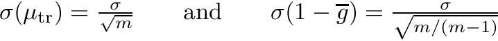
where m can be 2, 3, 4, etc. A value of m =1 indicates the original implementation should be used. For megavoltage energies around 1 MeV, m = 2 is recommended. Calculation progress messages during a type 1 calculation have been made clearer and the code has been further documented. The documentation has been also updated to reflect these changes.
- Date
- 2000
- Copyright
- National Research Council Canada
- Parameters
-
[out] g average fraction of the kinetic energy of secondary charged particles (produced in all the types of interactions) that is subsequently lost in radiative (photon-emitting) energy-loss processes as the particles slow to rest in the medium. (Taken from the NIST web page) e_brem Average energy lost to bremsstrahlung ebrem_tmp As above for the current history e_rad Average energy lost to bremsstrahlung & kinetic energy transferred in annihilation radiation (ie only annihilation in flight. Note this used to include fluorescent photons, but they should be excluded from e_tot as well. erad_tmp As above for the current history e_tot average energy released per particle includes subthreshold energy (iarg=4) etot_tmp As above for the current history e_radc = sum (etot_tmp*erad_tmp) e_bremc = sum (etot_tmp*ebrem_tmp) [out] e_brem/e_tot the average fraction of the kinetic energy subsequently lost in bremsstrahlung (photon-emitting) events [out] e_rad/e_tot same as g above anorm npgi npei E_ave Average spectrum energy factor Converts e_mutr and e_muen scored as 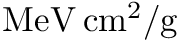 to 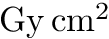 de_pulsei mutr The correct definition for a spectrum is that given by Attix of an energy fluence weighted average mass transfer coefficient 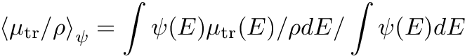
This is equivalent to the ICRU60/ICRU85 definition as long as one sums the total energy transferred from the spectrum and then divides by the average energy incident. For a while we scored <mu_tr/rho> directly, but this can differ substantially from the correct results and amounts to averaging over the fluence, not the energy fluencemuen Similarly, the energy fluence weighted average mass absorption coefficient is given by 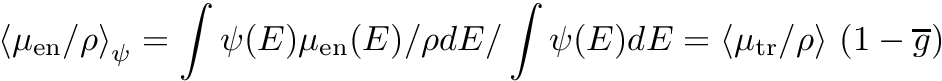
e_mutr Fluence averaged product 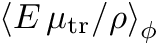 e_muen Fluence averaged product 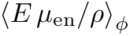 Eave average energy of incident spectrum: either actual or sampled
Function/Subroutine Documentation
◆ ausgab()
| subroutine ausgab | ( | integer*4 | iarg | ) |
◆ calculate_g()
| program calculate_g |
◆ howfar()
| subroutine howfar |
◆ inputs()
| subroutine inputs |
Subroutine to read user inputs and transport parameters.
◆ source()
| subroutine source |
◆ test_brems()
| subroutine test_brems |
◆ test_compton()
| subroutine test_compton |